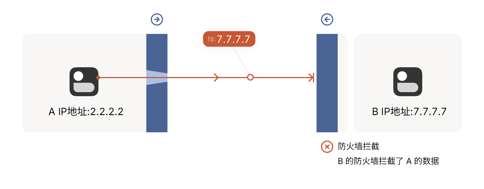
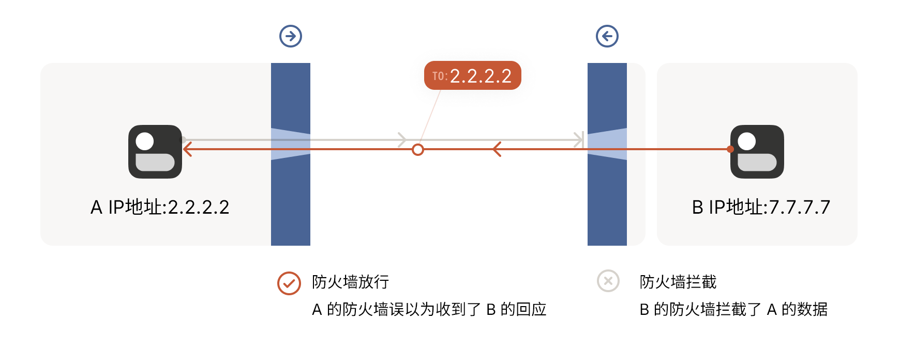
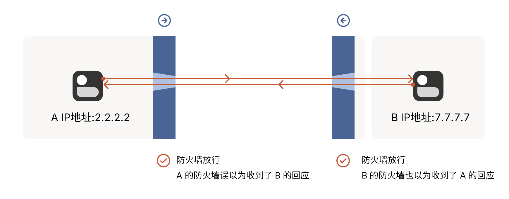

什么是 P2P ？
P2P（ Peer-to-Peer）， 也称点对点或对等网络，在 Easytier 中指直连（直接连接）。
传统网络架构：客户端-服务端，在 Easytier 中指中转/中继（relay）。
对等网络架构：只有节点，节点可以是服务端也可以是客户端。
相较于传统网络架构，以下为 P2P 的优势：
成本低：无需购买额外的服务器，大幅度节约联机成本。
延迟低：不过经过服务器转发数据，有效降低联机延迟。
带宽高：网络带宽取决于节点的上限。
警告
以上优势仅在所有节点网络质量良好的状况下才能体现！！！
P2P 和 NAT 有什么关系，具体有什么影响？
NAT 类型决定了你是否可以和其他用户建立 P2P 连接，建立 P2P 连接之后，通常情况下可以降低网络延迟，网络带宽较高。
当然即使无法建立 P2P 连接，您依然可以通过 Easytier 的 中转/中继/relay 功能进行联机，通常情况下网络延迟较高，网络带宽较低。
注意
IPv4 和 IPv6 都可以建立 P2P 连接，但双方必须拥有相同的协议才可建立 P2P 连接！
建立 P2P 连接难度表
| NAT 类型 | 开放型互联网 | 对称型防火墙 | 完全圆锥型 NAT | 受限圆锥型 NAT | 端口受限圆锥型 NAT | 对称型递增 NAT | 对称型 NAT |
|---|---|---|---|---|---|---|---|
| 开放型互联网 | 容易 | 容易 | 容易 | 容易 | 容易 | 容易 | 容易 |
| 对称型防火墙 | 容易 | 简单 | 简单 | 简单 | 简单 | 简单 | 简单 |
| 完全圆锥型 NAT | 容易 | 简单 | 简单 | 简单 | 简单 | 简单 | 简单 |
| 受限圆锥型 NAT | 容易 | 简单 | 简单 | 中等 | 中等 | 中等 | 中等 |
| 端口受限圆锥型 NAT | 容易 | 简单 | 简单 | 中等 | 中等 | 中等 | 中等 |
| 对称型递增 NAT | 容易 | 简单 | 简单 | 中等 | 中等 | 困难 | 困难 |
| 对称型 NAT | 容易 | 简单 | 简单 | 中等 | 中等 | 困难 | 极难 |
说明
NAT 类型仅决定了建立 P2P 连接的难度，无法保证 P2P 连接的网络质量，此外无论是哪种类型都无法 100% 保证可以建立 P2P 连接！
注意
对于 Easytier 来说目前仅探测了 IPv4 的 NAT 类型，绝大多数情况下 IPV6 的类型为对称型防火墙。家用宽带的绝大多数 NAT 类型为：端口受限圆锥型 NAT、对称型递增 NAT、对称型 NAT 和对称型防火墙（仅IPv6）。移动网络（手机卡/移动数据）的绝大多数 NAT 类型为：对称型 NAT 和对称型防火墙（仅IPv6）。
什么是 NAT 和 NAPT ？
NAT（Network Address Translation）网络地址转换，主要用于实现位于内部网络的主机访问外部网络的功能。当局域网内的主机需要访问外部网络时，通过 NAT 技术可以将其私网地址转为公网地址，并且多个私网用户可以共用一个公网地址，这样既可保证网络互通，又节省了公网地址。
NAPT（Network Address Port Translation）也称为 NAT-PT 或 PAT，网络地址端口转换，允许多个私网地址映射到同一个公网地址的不同端口。
说明
绝大多数情况下，IPv4 使用的是 NAPT，即：网络地址和网络端口都转换；IPv6 不使用 NAT 和 NAPT，即公网 IP。
什么是 NAT 类型？NAT 类型有哪些，它们有什么区别？
NAT 的类型是外部主机与内部主机建立连接方式，以下为所有的 NAT 类型极其特点：
说明
192.168.1.1（IPv4）和 fd00::1（IPv6）为内网地址。
Open Internet（开放型互联网/公网/直接映射+端点无关过滤）
该类型不使用 NAT，地址为公网 IP，可以直接被其他用户连接，例如：
IPv4
120.120.120.120:25565 ← 111.111.111.111:x（x代表任意端口）
120.120.120.120:25565 ← 222.222.222.222:x（x代表任意端口）
120.120.120.120:25565 ← 333.333.333.333:x（x代表任意端口）
120.120.120.120:25565 ← 444.444.444.444:x（x代表任意端口）
IPv6
[240e:3fd8:256a:3367::1]:25565 ← [240e::1]:x（x代表任意端口）
[240e:3fd8:256a:3367::1]:25565 ← [240e::2]:x（x代表任意端口）
[240e:3fd8:256a:3367::1]:25565 ← [240e::3]:x（x代表任意端口）
[240e:3fd8:256a:3367::1]:25565 ← [240e::4]:x（x代表任意端口）
该类型常见于防火墙放行的公网 IP 或者无防火墙的公网IP。
Symmetric Firewall（对称型防火墙/直接映射+地址和端口相关过滤）
该类型和 Open Internet 相同，但其所在的设备有防火墙对入站进行过滤，此时其他用户无法直接连接该端口，例如：
IPv4 120.120.120.120:25565 ↚ 111.111.111.111:x（x代表任意端口）
120.120.120.120:25565 ↚ 222.222.222.222:x（x代表任意端口）
120.120.120.120:25565 ↚ 333.333.333.333:x（x代表任意端口）
120.120.120.120:25565 ↚ 444.444.444.444:x（x代表任意端口）
IPv6
[240e:3fd8:256a:3367::1]:25565 ↚ [240e::1]:x（x代表任意端口）
[240e:3fd8:256a:3367::1]:25565 ↚ [240e::2]:x（x代表任意端口）
[240e:3fd8:256a:3367::1]:25565 ↚ [240e::3]:x（x代表任意端口）
[240e:3fd8:256a:3367::1]:25565 ↚ [240e::4]:x（x代表任意端口）
该类型常见于有防火墙的公网 IP，但可以通过打洞进行连接，能否直连取决于防火墙的策略。
No Pat NAT（Basic NAT/基础 NAT/端点无关映射+端点无关过滤）
该类型只进行地址转换，端口保持一致，例如：
IPv4
192.168.1.1:25565 ← 120.120.120.120:25565 ← 111.111.111.111:x（x代表任意端口）
192.168.1.1:25565 ← 120.120.120.120:25565 ← 222.222.222.222:x（x代表任意端口）
192.168.1.1:25565 ← 120.120.120.120:25565 ← 333.333.333.333:x（x代表任意端口）
192.168.1.1:25565 ← 120.120.120.120:25565 ← 444.444.444.444:x（x代表任意端口）
IPv6
[fd00::1]:25565 ← [240e:3fd8:256a:3367::1]:25565 ← [240e::1]:x（x代表任意端口）
[fd00::1]:25565 ← [240e:3fd8:256a:3367::1]:25565 ← [240e::2]:x（x代表任意端口）
[fd00::1]:25565 ← [240e:3fd8:256a:3367::1]:25565 ← [240e::3]:x（x代表任意端口）
[fd00::1]:25565 ← [240e:3fd8:256a:3367::1]:25565 ← [240e::4]:x（x代表任意端口）
Full Cone NAT（完全圆锥型 NAT/端点无关映射+端点无关过滤/NAT1）
该类型会将地址和端口都进行转换，例如：
IPv4
192.168.1.1:25565 ← 120.120.120.120:35565 ← 111.111.111.111:x（x代表任意端口）
192.168.1.1:25565 ← 120.120.120.120:35565 ← 222.222.222.222:x（x代表任意端口）
192.168.1.1:25565 ← 120.120.120.120:35565 ← 333.333.333.333:x（x代表任意端口）
192.168.1.1:25565 ← 120.120.120.120:35565 ← 444.444.444.444:x（x代表任意端口）
IPv6
[fd00::1]:25565 ← [240e:3fd8:256a:3367::1]:35565 ← [240e::1]:x（x代表任意端口）
[fd00::1]:25565 ← [240e:3fd8:256a:3367::1]:35565 ← [240e::2]:x（x代表任意端口）
[fd00::1]:25565 ← [240e:3fd8:256a:3367::1]:35565 ← [240e::3]:x（x代表任意端口）
[fd00::1]:25565 ← [240e:3fd8:256a:3367::1]:35565 ← [240e::4]:x（x代表任意端口）
该类型的策略是：我在内网中开放了25565这个端口，任何用户都可以通过转换后的公网端口35565连接进来。
Restricted Cone NAT（受限圆锥型 NAT/端点无关映射+地址有关过滤/NAT2）
该类型在 Full Cone NAT 基础上限制了其他用户的 IP 地址，例如：
IPv4
192.168.1.1:25565 ← 120.120.120.120:35565 ← 111.111.111.111:x（x代表任意端口）
192.168.1.1:25565 ← 120.120.120.120:35565 ↚ 222.222.222.222:x（x代表任意端口）
192.168.1.1:25565 ← 120.120.120.120:35565 ↚ 333.333.333.333:x（x代表任意端口）
192.168.1.1:25565 ← 120.120.120.120:35565 ↚ 444.444.444.444:x（x代表任意端口）
IPv6
[fd00::1]:25565 ← [240e:3fd8:256a:3367::1]:35565 ← [240e::1]:x（x代表任意端口）
[fd00::1]:25565 ← [240e:3fd8:256a:3367::1]:35565 ↚ [240e::2]:x（x代表任意端口）
[fd00::1]:25565 ← [240e:3fd8:256a:3367::1]:35565 ↚ [240e::3]:x（x代表任意端口）
[fd00::1]:25565 ← [240e:3fd8:256a:3367::1]:35565 ↚ [240e::4]:x（x代表任意端口）
该类型的策略是：我在内网中开放了25565这个端口，只有我指定的 IP 地址 才可以通过转换后的公网端口35565连接进来。
其中（111.111.111.111和240e::1）为我指定的 IP 地址。
Port Restricted Cone NAT（端口受限圆锥型 NAT/端点无关映射+地址和端口有关过滤/NAT3）
该类型在 Restricted Cone NAT 基础上限制了其他用户的端口号，例如：
IPv4
192.168.1.1:25565 ← 120.120.120.120:35565 ← 111.111.111.111:11010
192.168.1.1:25565 ← 120.120.120.120:35565 ↚ 111.111.111.111:22020
192.168.1.1:25565 ← 120.120.120.120:35565 ↚ 222.222.222.222:x（x代表任意端口）
192.168.1.1:25565 ← 120.120.120.120:35565 ↚ 333.333.333.333:x（x代表任意端口）
IPv6
[fd00::1]:25565 ← [240e:3fd8:256a:3367::1]:35565 ← [240e::1]:11010
[fd00::1]:25565 ← [240e:3fd8:256a:3367::1]:35565 ↚ [240e::1]:22020
[fd00::1]:25565 ← [240e:3fd8:256a:3367::1]:35565 ↚ [240e::2]:x（x代表任意端口）
[fd00::1]:25565 ← [240e:3fd8:256a:3367::1]:35565 ↚ [240e::3]:x（x代表任意端口）
该类型的策略是：我在内网中开放了25565这个端口，只有我指定的 IP 地址+端口号 才可以通过转换后的公网端口35565连接进来。
其中（111.111.111.111:11010和[240e::1]:11010）为我指定的 IP 地址+端口号。
Symmetric Easy Increase NAT（对称型递增 NAT/地址和端口相关映射+地址和端口有关过滤/NAT4E）
该类型在 Port Restricted Cone NAT 基础上限制了映射行为，但映射的端口是有规律的，例如：
IPv4
192.168.1.1:25565 ← 120.120.120.120:35565 ← 111.111.111.111:11010
192.168.1.1:25565 ← 120.120.120.120:35566 ← 222.222.222.222:22020
192.168.1.1:25565 ← 120.120.120.120:35567 ↚ 111.111.111.111:33030
192.168.1.1:25565 ← 120.120.120.120:35568 ↚ 333.333.333.333:x（x代表任意端口）
IPv6
[fd00::1]:25565 ← [240e:3fd8:256a:3367::1]:35565 ← [240e::1]:11010
[fd00::1]:25565 ← [240e:3fd8:256a:3367::1]:35567 ← [240e::2]:22020
[fd00::1]:25565 ← [240e:3fd8:256a:3367::1]:35569 ↚ [240e::1]:33030
[fd00::1]:25565 ← [240e:3fd8:256a:3367::1]:35571 ↚ [240e::3]:x（x代表任意端口）
其中（111.111.111.111:11010、222.222.222.222:11010、[240e::1]:11010、[240e::2]:22020）为我指定的 IP 地址+端口号。
Symmetric NAT（对称型 NAT/地址和端口相关映射+地址和端口有关过滤/NAT4）
该类型在 Symmetric Easy Increase NAT 基础上限制了映射的端口，该端口随机，例如：
IPv4
192.168.1.1:25565 ← 120.120.120.120:66534 ← 111.111.111.111:11010
192.168.1.1:25565 ← 120.120.120.120:32768 ← 222.222.222.222:22020
192.168.1.1:25565 ← 120.120.120.120:26984 ↚ 111.111.111.111:33030
192.168.1.1:25565 ← 120.120.120.120:16489 ↚ 333.333.333.333:x（x代表任意端口）
IPv6
[fd00::1]:25565 ← [240e:3fd8:256a:3367::1]:55645 ← [240e::1]:11010
[fd00::1]:25565 ← [240e:3fd8:256a:3367::1]:32478 ← [240e::2]:22020
[fd00::1]:25565 ← [240e:3fd8:256a:3367::1]:43269 ↚ [240e::1]:33030
[fd00::1]:25565 ← [240e:3fd8:256a:3367::1]:11443 ↚ [240e::3]:x（x代表任意端口）
其中（111.111.111.111:11010、222.222.222.222:11010、[240e::1]:11010、[240e::2]:22020）为我指定的 IP 地址+端口号。
Blocked（阻止型）
该类型的防火墙非常严格，任何用户都无法连接，例如：
IPv4
192.168.1.1:25565 ← 120.120.120.120:66534 ↚ 任意 IP +任意端口
IPv6
[fd00::1]:25565 ← [240e:3fd8:256a:3367::1]:55645 ↚ 任意 IP +任意端口
什么是打洞？
首先我们要理解有状态防火墙：
我们都知道防火墙可以入站和出站，但连接和“方向”是协议设计者想象的产物。
在实际操作中，每个连接最终都是双向的；所有数据包都会来回传输。
那防火墙如何知道什么是入站，什么是出站呢？
这就是状态部分的作用，有状态防火墙的核心是维护一个“状态表”（State Table），记录所有经过的连接的状态信息。当数据包到达时，防火墙不仅检查数据包的头部信息（如源/目的IP、端口、协议），还会检查这个数据包是否属于一个已经建立的、受信任的连接。
绝大多数情况下，NAT 设备都会包含一个有状态防火墙，例如上面提到的对称型防火墙，对于绝大多数的防火墙的规则来说，当 A 向 B 的 IP+指定端口发送数据后，即使 B 的防火墙丢弃了该数据包，但只要 B 通过该 IP+端口发送数据回应 A 的请求，那么 B 的数据就可以通过 A 的防火墙，如下图所示：



我们可以看到 A 和 B 之间在防火墙之间建立了一个连接，而防火墙上面出现了一个“洞”，这就是打洞的由来。
为什么我无法建立 P2P 连接？
通过对 NAT 和打洞的了解，在仅有 NAT 的情况下，建立 P2P 的几率几乎为100%，但我们都知道几乎所有设备都有防火墙，只要运营商将其防火墙的规则设置严格一些，那我们就无法建立 P2P 连接。
如何提高 P2P 成功的几率呢？
调整防火墙规则
放行 Easytier 的端口可极大地提高 P2p 成功的几率，可能需要调整多个设备才能生效。
注意
该方法要求 NAT 类型为 Symmetric Firewall（对称型防火墙/直接映射+地址和端口相关过滤）
开启 IPv6
绝大多数情况下，IPv6 为公网IP，P2P 成功的几率几乎为 100%，但需要所有节点拥有 IPv6。
修改 NAT 类型
尽量将 IPv4 的 NAT 类型修改为 **Full Cone NAT（完全圆锥型 NAT/端点无关映射+端点无关过滤/NAT1）**或者规则更加宽松的类型，具体方法可参考百度。
关闭 NATv6 或将 IPv6 的 NAT 类型修改为为 **Full Cone NAT（完全圆锥型 NAT/端点无关映射+端点无关过滤/NAT1）**或者规则更加宽松的类型，具体方法可参考百度。
注意
部分地区会限制用户修改 NAT 类型，请自行联系运营商！
开启路由器的 UPNP 功能
UPNP 会自动配置转发规则，可能会提高 P2P 成功几率。
向运营商购买公网IPv4的套餐
由于一些原因其他节点无法拥有 IPv6 地址，可向运营商购买公网 IPv4 地址，该方法建立 P2P 连接的几率几乎为 100%。